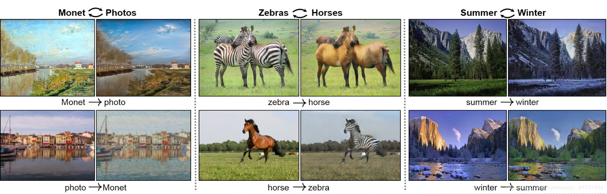
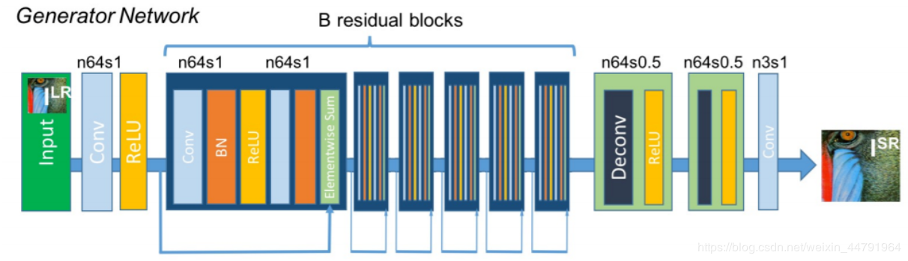
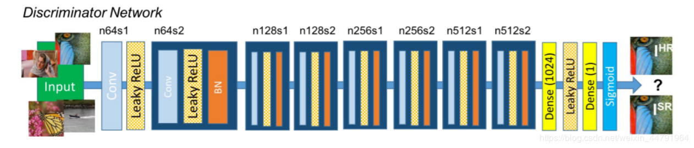

DCGAN深度卷积对抗生成网络
CSDN：https://blog.csdn.net/weixin_44791964/article/details/103743038
DCGAN的全称是Deep Convolutional Generative Adversarial Networks ,
意即深度卷积对抗生成网络。
它是由Alec Radford在论文Unsupervised Representation Learning with Deep Convolutional Generative Adversarial Networks中提出的。
实际上它是在GAN的基础上增加深度卷积网络结构。
CGAN待条件约束的GAN
CSDN：https://blog.csdn.net/weixin_44791964/article/details/103744620
CGAN一种带条件约束的GAN，在生成模型（D）和判别模型（G）的建模中均引入条件变量y（conditional variable y）。
使用额外信息y对模型增加条件，可以指导数据生成过程。这些条件变量y可以基于多种信息，例如类别标签，用于图像修复的部分数据，来自不同模态（modality）的数据。
如果条件变量y是类别标签，可以看做CGAN是把纯无监督的 GAN 变成有监督的模型的一种改进。
这个简单直接的改进被证明非常有效。
简单来讲，普通的GAN输入的是一个N维的正态分布随机数，而CGAN会为这个随机数添上标签，其利用Embedding层将正整数（索引值）转换为固定尺寸的稠密向量，并将这个稠密向量与N维的正态分布随机数相乘，从而获得一个有标签的随机数。此时，模型的LOSS将包括标签的损失和准确率的损失。
ACGAN
CSDN: https://blog.csdn.net/weixin_44791964/article/details/103746380
ACGAN一种带条件约束的DCGAN，在生成模型（D）和判别模型（G）的建模中均引入条件变量y（conditional variable y）。
ACGAN相当于是DCGAN和CGAN的结合，将深度卷积网络和标签带入到GAN当中。
使用额外信息y对模型增加条件，可以指导数据生成过程。这些条件变量y可以基于多种信息，例如类别标签，用于图像修复的部分数据，来自不同模态（modality）的数据。
在存在类别标签的情况下，将深度卷积网络带入到GAN当中，提高图片的生成质量。
这个简单直接的改进被证明非常有效。
简单来讲，普通的GAN输入的是一个N维的正态分布随机数，而ACGAN会为这个随机数添上标签，其利用Embedding层将正整数（索引值）转换为固定尺寸的稠密向量，并将这个稠密向量与N维的正态分布随机数相乘，从而获得一个有标签的随机数。
与此同时，ACGAN将深度卷积网络带入到存在标签的GAN中，可以生成更加高质量的图片
COGAN
COGAN是一种耦合生成式对抗网络，其内部具有一定的耦合，可以对同一个输入有不同的输出。
其具体实现方式就是：
1、建立两个生成模型，两个判别模型。
2、两个生成模型的特征提取部分有一定的重合，在最后生成图片的部分分开，以生成不同类型的图片。
3、两个判别模型的特征提取部分有一定的重合，在最后判别真伪的部分分开，以判别不同类型的图片。
LSGAN
CSDN:https://blog.csdn.net/weixin_44791964/article/details/103758751
LSGAN是一种最小二乘GAN。
其主要特点为将loss函数的计算方式由交叉熵更改为均方差。
无论是判别模型的训练，还是生成模型的训练，都需要将交叉熵更改为均方差。
CycleGAN
CSDN:https://blog.csdn.net/weixin_44791964/article/details/103780922
CycleGAN是一种完成图像到图像的转换的一种GAN。
图像到图像的转换是一类视觉和图形问题，其目标是获得输入图像和输出图像之间的映射。
但是，对于许多任务，配对的训练数据将不可用。
CycleGAN提出了一种在没有成对例子的情况下学习将图像从源域X转换到目标域Y的方法。

SRGAN
CSDN:https://blog.csdn.net/weixin_44791964/article/details/103825427
SRGAN出自论文Photo-Realistic Single Image Super-Resolution Using a Generative Adversarial Network。
其主要的功能就是输入一张低分辨率图片，生成高分辨率图片。
文章提到，普通的超分辨率模型训练网络时只用到了均方差作为损失函数，虽然能够获得很高的峰值信噪比，但是恢复出来的图像通常会丢失高频细节。
SRGAN利用感知损失(perceptual loss)和对抗损失(adversarial loss)来提升恢复出的图片的真实感。
其中感知损失是利用卷积神经网络提取出的特征，通过比较生成图片经过卷积神经网络后的特征和目标图片经过卷积神经网络后的特征的差别，使生成图片和目标图片在语义和风格上更相似
对抗损失由GAN提供，根据图像是否可以欺骗过判别网络进行训练。
生成网络

此图从左至右来看，我们可以知道：
SRGAN的生成网络由三个部分组成。
1、低分辨率图像进入后会经过一个卷积+RELU函数
2、然后经过B个残差网络结构，每个残差网络内部包含两个卷积+标准化+RELU，还有一个残差边。
3、然后进入上采样部分，将长宽进行放大，两次上采样后，变为原来的4倍，实现提高分辨率。
判别网络

此图从左至右来看，我们可以知道：
SRGAN的判别网络由不断重复的 卷积+LeakyRELU和标准化 组成。
训练思路
1、对判别模型进行训练
将真实的高分辨率图像和虚假的高分辨率图像传入判别模型中。
将真实的高分辨率图像的判别结果与1对比得到loss。
将虚假的高分辨率图像的判别结果与0对比得到loss。
利用得到的loss进行训练。
2、对生成模型进行训练
将低分辨率图像传入生成模型，得到高分辨率图像，利用该高分辨率图像获得判别结果与1进行对比得到loss。
将真实的高分辨率图像和虚假的高分辨率图像传入VGG网络，获得两个图像的特征，通过这两个图像的特征进行比较获得loss。